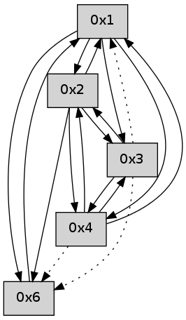

>> << IDX [start] -100 -25 -5 +0 +5 +25 +100 [360.372816086]
 Previous packets
355.009594 beacon06(adaf) #0 coord=01,02,05,03,04,06 cycle=432.0ms assoc 64 ac a8
355.021316 [Hello(2): seq=649 sym=6,1,4 asym=3 sysInfo= stat=6:5,0,0,0/1:11,0,0,0/4:0,0,0,0/3:0,0,0,0]
----------------------------------------------------------------------
355.451741 beacon01(adaf) #0 coord=01,02,05,03,04,06 cycle=432.0ms assoc
-- color-indic=0 64 59 df
355.461701 beacon02(adaf) #0 coord=01,02,05,03,04,06 cycle=432.0ms assoc 64 08 20
355.471702 beacon05(adaf) #0 coord=01,02,05,03,04,06 cycle=432.0ms assoc 64 ae 0a
355.481701 beacon03(adaf) #0 coord=01,02,05,03,04,06 cycle=432.0ms assoc 64 32 2e
355.491702 beacon04(adaf) #0 coord=01,02,05,03,04,06 cycle=432.0ms assoc 64 94 04
355.501704 beacon06(adaf) #0 coord=01,02,05,03,04,06 cycle=432.0ms assoc 64 e0 18
355.513409 [Hello(4): seq=152 sym=1,2 asym=3,6 sysInfo= stat=1:14,0,0,0/2:1,0,0,0/3:0,0,0,0/6:0,0,0,0]
355.517088 [Hello(3): seq=152 sym=2,1,4 asym=6 sysInfo= stat=2:1,0,0,0/1:15,0,0,0/4:0,0,0,0/6:3,0,0,0]
355.520771 [Hello(1): seq=51 sym=6,2,4 sysInfo= stat=6:1,0,0,0/2:1,0,0,0/4:0,0,0,0]
----------------------------------------------------------------------
355.943848 beacon01(adaf) #0 coord=01,02,05,03,04,06 cycle=432.0ms assoc
-- color-indic=0 64 9d b0
355.953809 beacon02(adaf) #0 coord=01,02,05,03,04,06 cycle=432.0ms assoc 64 cc 4f
355.963810 beacon05(adaf) #0 coord=01,02,05,03,04,06 cycle=432.0ms assoc 64 6a 65
355.973810 beacon03(adaf) #0 coord=01,02,05,03,04,06 cycle=432.0ms assoc 64 f6 41
355.983811 beacon04(adaf) #0 coord=01,02,05,03,04,06 cycle=432.0ms assoc 64 50 6b
355.993810 beacon06(adaf) #0 coord=01,02,05,03,04,06 cycle=432.0ms assoc 64 24 77
356.005493 [Hello(2): seq=650 sym=6,3,1,4 sysInfo= stat=6:6,0,0,0/3:1,0,0,0/1:12,0,0,0/4:0,0,0,0]
----------------------------------------------------------------------
356.435956 beacon01(adaf) #0 coord=01,02,05,03,04,06 cycle=432.0ms assoc
-- color-indic=0 64 e5 1d
356.445918 beacon02(adaf) #0 coord=01,02,05,03,04,06 cycle=432.0ms assoc 64 b4 e2
356.455917 beacon05(adaf) #0 coord=01,02,05,03,04,06 cycle=432.0ms assoc 64 12 c8
356.465917 beacon03(adaf) #0 coord=01,02,05,03,04,06 cycle=432.0ms assoc 64 8e ec
356.475917 beacon04(adaf) #0 coord=01,02,05,03,04,06 cycle=432.0ms assoc 64 28 c6
356.485917 beacon06(adaf) #0 coord=01,02,05,03,04,06 cycle=432.0ms assoc 64 5c da
356.497605 [Hello(4): seq=153 sym=3,1,2 asym=6 sysInfo= stat=3:1,0,0,0/1:15,0,0,0/2:2,0,0,0/6:0,0,0,0]
356.500050 [Hello(1): seq=52 sym=6,2,4 sysInfo= stat=6:1,0,0,0/2:2,0,0,0/4:0,0,0,0]
----------------------------------------------------------------------
356.928064 beacon01(adaf) #0 coord=01,02,05,03,04,06 cycle=432.0ms assoc
-- color-indic=0 64 21 72
356.938025 beacon02(adaf) #0 coord=01,02,05,03,04,06 cycle=432.0ms assoc 64 70 8d
356.948025 beacon05(adaf) #0 coord=01,02,05,03,04,06 cycle=432.0ms assoc 64 d6 a7
356.958025 beacon03(adaf) #0 coord=01,02,05,03,04,06 cycle=432.0ms assoc 64 4a 83
356.968028 beacon04(adaf) #0 coord=01,02,05,03,04,06 cycle=432.0ms assoc 64 ec a9
356.978026 beacon06(adaf) #0 coord=01,02,05,03,04,06 cycle=432.0ms assoc 64 98 b5
356.989728 [Hello(2): seq=651 sym=6,3,1,4 sysInfo= stat=6:7,0,0,0/3:1,0,0,0/1:13,0,0,0/4:0,0,0,0]
----------------------------------------------------------------------
357.420172 beacon01(adaf) #0 coord=01,02,05,03,04,06 cycle=432.0ms assoc
-- color-indic=0 64 6d c2
357.430133 beacon02(adaf) #0 coord=01,02,05,03,04,06 cycle=432.0ms assoc 64 3c 3d
357.440132 beacon05(adaf) #0 coord=01,02,05,03,04,06 cycle=432.0ms assoc 64 9a 17
357.450134 beacon03(adaf) #0 coord=01,02,05,03,04,06 cycle=432.0ms assoc 64 06 33
357.460133 beacon04(adaf) #0 coord=01,02,05,03,04,06 cycle=432.0ms assoc 64 a0 19
357.470133 beacon06(adaf) #0 coord=01,02,05,03,04,06 cycle=432.0ms assoc 64 d4 05
357.480919 [Hello(1): seq=53 sym=6,2,4 sysInfo= stat=6:1,0,0,0/2:3,0,0,0/4:0,0,0,0]
357.485513 [Hello(4): seq=154 sym=3,1,2 asym=6 sysInfo= stat=3:1,0,0,0/1:0,0,0,0/2:3,0,0,0/6:0,0,0,0]
357.490899 [Hello(3): seq=154 sym=2,4 asym=6,1 sysInfo= stat=2:3,0,0,0/4:0,0,0,0/6:3,0,0,0/1:1,0,0,0]
----------------------------------------------------------------------
357.912280 beacon01(adaf) #0 coord=01,02,05,03,04,06 cycle=432.0ms assoc
-- color-indic=0 64 a9 ad
357.922241 beacon02(adaf) #0 coord=01,02,05,03,04,06 cycle=432.0ms assoc 64 f8 52
357.932240 beacon05(adaf) #0 coord=01,02,05,03,04,06 cycle=432.0ms assoc 64 5e 78
357.942241 beacon03(adaf) #0 coord=01,02,05,03,04,06 cycle=432.0ms assoc 64 c2 5c
357.952241 beacon04(adaf) #0 coord=01,02,05,03,04,06 cycle=432.0ms assoc 64 64 76
357.962243 beacon06(adaf) #0 coord=01,02,05,03,04,06 cycle=432.0ms assoc 64 10 6a
357.973919 [Hello(2): seq=652 sym=6,3,1,4 sysInfo= stat=6:8,0,0,0/3:2,0,0,0/1:14,0,0,0/4:0,0,0,0]
----------------------------------------------------------------------
358.404386 beacon01(adaf) #0 coord=01,02,05,03,04,06 cycle=432.0ms assoc
-- color-indic=0 64 e4 aa
358.414347 beacon02(adaf) #0 coord=01,02,05,03,04,06 cycle=432.0ms assoc 64 b5 55
358.424347 beacon05(adaf) #0 coord=01,02,05,03,04,06 cycle=432.0ms assoc 64 13 7f
358.434348 beacon03(adaf) #0 coord=01,02,05,03,04,06 cycle=432.0ms assoc 64 8f 5b
358.444348 beacon04(adaf) #0 coord=01,02,05,03,04,06 cycle=432.0ms assoc 64 29 71
358.454348 beacon06(adaf) #0 coord=01,02,05,03,04,06 cycle=432.0ms assoc 64 5d 6d
358.466068 [Hello(4): seq=155 sym=3,1,2 asym=6 sysInfo= stat=3:2,0,0,0/1:0,0,0,0/2:4,0,0,0/6:0,0,0,0]
358.476296 [Hello(1): seq=54 sym=6,2,4,3 sysInfo= stat=6:2,0,0,0/2:4,0,0,0/4:0,0,0,0/3:0,0,0,0]
----------------------------------------------------------------------
358.896494 beacon01(adaf) #0 coord=01,02,05,03,04,06 cycle=432.0ms assoc
-- color-indic=0 64 20 c5
358.906455 beacon02(adaf) #0 coord=01,02,05,03,04,06 cycle=432.0ms assoc 64 71 3a
358.916454 beacon05(adaf) #0 coord=01,02,05,03,04,06 cycle=432.0ms assoc 64 d7 10
358.926455 beacon03(adaf) #0 coord=01,02,05,03,04,06 cycle=432.0ms assoc 64 4b 34
358.936456 beacon04(adaf) #0 coord=01,02,05,03,04,06 cycle=432.0ms assoc 64 ed 1e
358.946456 beacon06(adaf) #0 coord=01,02,05,03,04,06 cycle=432.0ms assoc 64 99 02
358.958140 [Hello(2): seq=653 sym=6,3,1,4 sysInfo= stat=6:9,0,0,0/3:2,0,0,0/1:15,0,0,0/4:0,0,0,0]
----------------------------------------------------------------------
359.388601 beacon01(adaf) #0 coord=01,02,05,03,04,06 cycle=432.0ms assoc
-- color-indic=0 64 6c 75
359.398562 beacon02(adaf) #0 coord=01,02,05,03,04,06 cycle=432.0ms assoc 64 3d 8a
359.408562 beacon05(adaf) #0 coord=01,02,05,03,04,06 cycle=432.0ms assoc 64 9b a0
359.418563 beacon03(adaf) #0 coord=01,02,05,03,04,06 cycle=432.0ms assoc 64 07 84
359.428563 beacon04(adaf) #0 coord=01,02,05,03,04,06 cycle=432.0ms assoc 64 a1 ae
359.438563 beacon06(adaf) #0 coord=01,02,05,03,04,06 cycle=432.0ms assoc 64 d5 b2
359.450273 [Hello(4): seq=156 sym=3,1,2 asym=6 sysInfo= stat=3:2,0,0,0/1:1,0,0,0/2:5,0,0,0/6:0,0,0,0]
359.454308 [Hello(1): seq=55 sym=6,2,4,3 sysInfo= stat=6:2,0,0,0/2:5,0,0,0/4:0,0,0,0/3:0,0,0,0]
----------------------------------------------------------------------
359.880709 beacon01(adaf) #0 coord=01,02,05,03,04,06 cycle=432.0ms assoc
-- color-indic=0 64 a8 1a
359.890670 beacon02(adaf) #0 coord=01,02,05,03,04,06 cycle=432.0ms assoc 64 f9 e5
359.900670 beacon05(adaf) #0 coord=01,02,05,03,04,06 cycle=432.0ms assoc 64 5f cf
359.910670 beacon03(adaf) #0 coord=01,02,05,03,04,06 cycle=432.0ms assoc 64 c3 eb
359.920670 beacon04(adaf) #0 coord=01,02,05,03,04,06 cycle=432.0ms assoc 64 65 c1
359.930670 beacon06(adaf) #0 coord=01,02,05,03,04,06 cycle=432.0ms assoc 64 11 dd
359.942356 [Hello(2): seq=654 sym=6,3,1,4 sysInfo= stat=6:10,0,0,0/3:2,0,0,0/1:0,0,0,0/4:0,0,0,0]